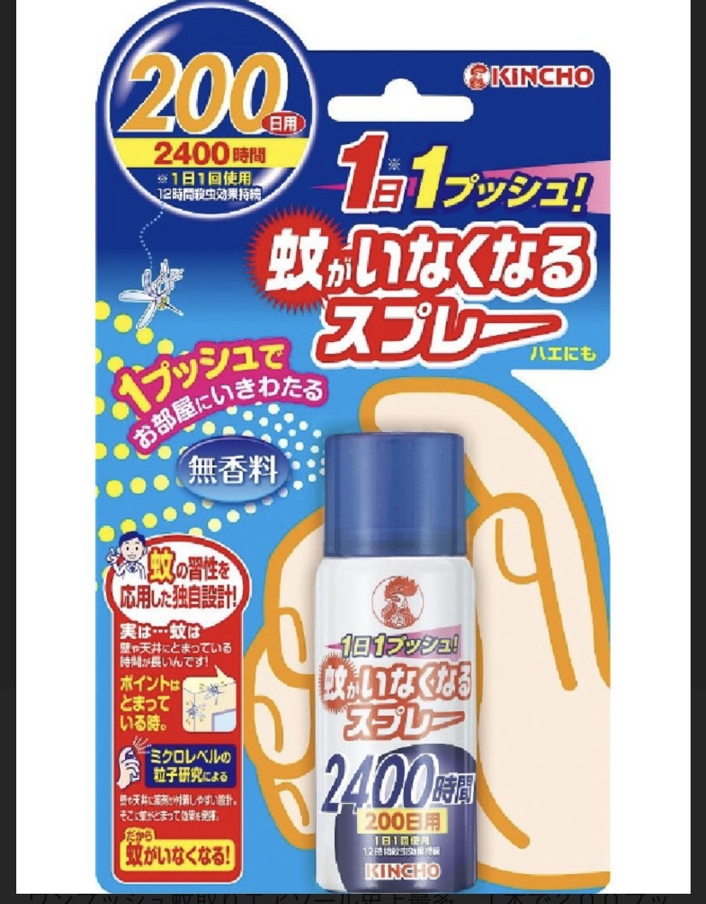
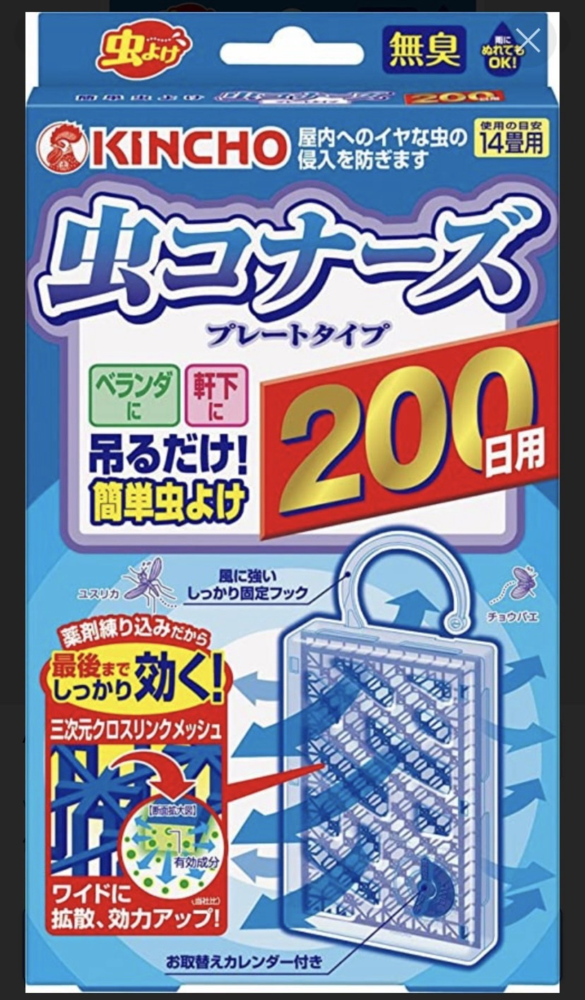

參考照片
參考照片
團體出發2026/09/26（六）06:10 家樓下機場接送出發
07:00 桃園機場第一航廈集合
07:00 桃園機場第一航廈集合
航班樂桃航空 MM922 桃園 09:35 → 那霸 12:20
樂桃航空 MM929 那霸 16:45 → 桃園 17:20
樂桃航空 MM929 那霸 16:45 → 桃園 17:20
住宿那霸旭橋托麗芙特酒店
Hotel Torifito Naha Asahibashi
Hotel Torifito Naha Asahibashi
用車小巴 + 當地中文導遊
出國注意事項
- 護照一定要帶新的有效護照，請不要帶到舊護照。
- 請攜帶防曬用品、雨具、環保杯或保溫杯，方便行程中補充水分。
- 慢性病藥物、習慣用藥、營養品與保健食品請自行備妥；也建議帶止痛藥或腸胃藥以備不時之需，日本飯店不能提供藥物。
- 一般打火機可依規定攜帶；不可攜帶防風打火機。刮鬍刀、水果刀等尖銳或刀刃物品請放托運行李。
- 超過 100ml 的液體、凝膠狀物品請放托運行李。手機、筆電、平板、行動電源請隨身攜帶。
- 行動電源 10,000mAh 不得超過 2 個，20,000mAh 僅能 1 個；飛機上不可用行動電源充電，且須放在視線可見處。
- 台灣出境、入境都不可攜帶電子煙，若攜帶可能觸法。
- 日本多數店家不再免費提供購物袋，購物袋常需另付 3-5 日圓，建議自備環保袋。
- 每人 1 件 20 公斤託運行李，隨身行李最多 2 件、合計 7 公斤內。


那霸天氣預報
出發前查詢版，天氣仍可能變動，請以當天 Google 天氣或氣象 App 為準。
9/26（六）晴時多雲32° / 27°降雨 20%
9/27（日）晴時偶陣雨32° / 27°降雨 50%
9/28（一）晴天33° / 28°降雨 10%
9/29（二）晴天32° / 27°降雨 10%
沖繩白天仍偏熱，建議帽子、防曬、雨具與水瓶都放隨身包。
台灣出發機場流程
- 帶好證件：出發當日請攜帶有效護照。
- 抵達時間：請在班機起飛前 3 小時，抵達桃園機場第一航廈。
- 報到櫃檯：前往第一航廈第 12 號樂桃航空櫃檯辦理登機手續。
- 確認托運行李：登機手續結束後，請到後方確認自己的行李通過 X 光檢查。
- 安檢與出境：確認行李沒問題後，請盡速到二樓進行安檢與出境手續。
- 登機門提醒：機場有時會臨時更改登機門，請務必在登機證上的登機時間前 15 分鐘抵達登機門。
- 候機室檢查：候機時可先確認日本入境卡與海關卡是否填寫完整，若有遺漏請在候機時間補上。
- 抵達沖繩入境：抵達後請把入境卡放入護照相片頁，交給日本入境官進行入境審查。
- 領行李與海關：完成入境後至行李轉盤提領行李，確認沒有拿錯；再將海關單夾在護照相片頁，帶著行李交給海關人員檢查。
- 出關集合：出關後，導遊會在一樓入境大廳等候大家，接著帶領上車開始旅程。
那霸出發機場流程
- 抵達時間：回程時導遊會在出發前 2.5 小時帶大家抵達那霸機場國際線三樓。
- 樂桃報到：導遊會帶大家到樂桃航空國際線櫃檯進行報到手續。
- 自動報到機：請在自動報到機輸入或感應電子機票 QR Code，也可輸入訂位 PNR。
10 位團員：APDVS9
包含：陳姵瑾、邱毓珊、李孟凌、王瑋璉、吳柏鋒、吳承翰、吳承懋、吳宗鍇、吳玟錡、吳宣瑩。
5 位團員：Z36YZP包含：吳金龍、吳品君、吳玟靜、顏辰熹、顏俊杰。
- 選擇姓名：因團票同一個 PNR 可能約有 10 位旅客姓名，畫面出現名單後請點選自己的名字。
- 列印登機證：依照機器指示印出登機證。
- 托運行李：拿著登機證到托運櫃檯辦理行李托運。
- 出境安檢：托運完成後，前往國際線二樓安檢入口進行出境安檢。
- 自動通關：安檢結束後，出境時請使用自動通關系統，將護照放在機器上通過查驗。
- 免稅區與登機門：通過後即可抵達免稅區與登機門區，請找到自己的登機門準備回台。
車程為一般路況預估，實際時間請以出發當下 Google Maps 為準。行程順序仍以當地導遊、交通與天候調整為準。
第一天 9/26（六）：桃園機場 / 那霸機場 → 系滿漁市場 → 瀨長島 → 美國村 → 飯店
抵達沖繩後先往南吃海鮮，再回到瀨長島看海與飛機，傍晚前往北谷美國村逛街。
參考照片
 官方旅遊圖
官方旅遊圖
 官網照片
官網照片
 參考照片
參考照片
 飯店參考圖
飯店參考圖
第二天 9/27（日）：古宇利島 + 蝦蝦飯 → 美麗海水族館 → Ocean Boo 晚餐 → 飯店
北部長距離移動日，重點是古宇利大橋海景、KOURI SHRIMP 與美麗海水族館。
 官方旅遊圖
官方旅遊圖
 官網照片
官網照片
 參考照片
參考照片
 餐點參考圖
飯店參考圖
餐點參考圖
飯店參考圖
第三天 9/28（一）：沖繩兒童王國 → PARCO CITY → 國際通與牧志市場
中部親子景點、購物中心與那霸市區散策。本日行程註記自行回飯店。
 官網照片
官網照片
 餐廳參考
餐廳參考
 官網照片
官網照片

 地圖參考圖
地圖參考圖
第四天 9/29（二）：自由活動 → 14:00 飯店集合 → 那霸機場 / 桃園機場
早餐後可寄放行李，自由活動至下午飯店大廳集合送機。
飯店參考圖
 附近散步
附近散步
14:00 集合前：飯店附近自由活動推薦
早餐後可寄放行李，建議安排飯店步行或短程計程車可到的景點與午餐。請預留回飯店取行李時間，13:30 前回到飯店附近會比較安心。


 參考照片
參考照片
資料備註
- 行程、航班、飯店與餐食備註依「2026年09月26日發王瑋璉行前備忘錄.pdf」整理。
- 地圖按鈕使用 Google Maps 搜尋與路線連結，開啟後會依當下交通狀況重新估算。